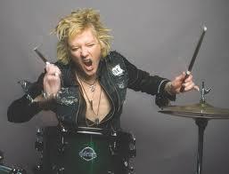

Members
Current members
- Rudolf Schenker - rhythm and lead guitars, backing vocals (1965-present)
- Klaus Meine - lead vocals (1970-present)
- Matthias Jabs - lead and rhythm guitars, backing vocals (1978, 1979-present)
- James Kottak - drums, backing vocals (1996-present)

- Pawel Maciwoda - bass, backing vocals (2004-present)
Former members
- Lothar Heimberg - bass, backing vocals (1965-1973)
- Wolfgang Dziony - drums, percussion, backing vocals (1965-1973)
- Karl-Heinz Vollmer - lead & rhythm guitars, backing vocals (1965-1970)
- Michael Schenker - lead & rhythm guitars, backing vocals (1970-1973, 1978-1979)
- Francis Buchholz - bass, backing vocals (1973-1983, 1984-1992)
- Uli Jon Roth - lead & rhythm guitars, backing vocals, lead vocals on "Drifting Sun", "Fly to the Rainbow", "Dark Lady", "Sun in My Hand", "Hell Cat", "Polar Nights" (1973-1978)
- Jurgen Rosenthal - drums, percussion, backing vocals (1973-1975)
- Achim Kirschning - keyboards (1973-1974)
- Rudy Lenners - drums, percussion (1975-1977)
- Joe Wyman - drums, percussion (1977)
- Herman Rarebell - drums, percussion, backing vocals (1977-1983, 1984-1995)
- Ralph Rieckermann - bass, backing vocals (1993-2000, 2000-2003)
- Curt Cress - drums, percussion (1996)
- Ken Taylor - bass, backing vocals (2000)
- Ingo Powitzer - bass, backing vocals (2004)
Manager
- Peter F. Amend (Lawer, Booker and Manager 1991-present)
- Stewart Young (1995-present)
- Tom Consolo (Front Line Management; Frontline Management Group, Azoffmusic Management; North-America, 2011)
- Steve Martin (The Agency Group, 2012)